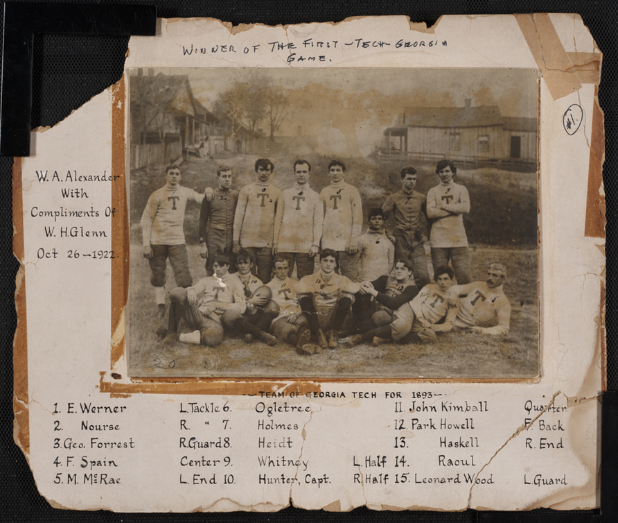
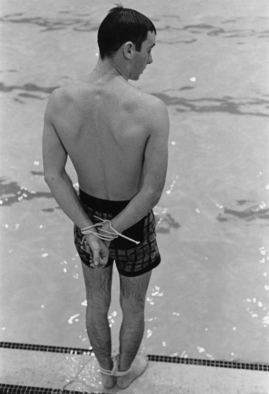

1885
1886
1888
1890
1892
1893
1894
1896
1904
1905
1906
1908
1910
1911
1913
1915
1916
1917
1920
1922
1929
1930
1933
1938
1944
1945
1948
1952
1955
1956
1957
1960
1961
1964
1967
1969
1972
1973
1974
1978
1980
1981
1987
1989
1990
1991
1994
1996
2002
2003
2004
2007
2008
2009
2011
2013
2018
October 13th:
Georgia Tech is Founded
Georgia Legislature passes a bill appropriating $65,000 to found a technical college.
October 18th:
Georgia Tech's home is determined
A commission in charge of choosing the placement of the school was created to filter through 24 location ballots. In the end, Atlanta was officially chosen as the site for the Georgia School of Technology.
May:
Issac S. Hopkins appointed as first president of Georgia Tech
President Hopkins would serve from 1888 until 1896. During his time here, he served as chair of Physics, mandated strong ethics and an honor system, and created preparatory programs to increase enrollment.
October:
Georgia Tech opens
The school opens for the Fall with 84 students and only one degree- Mechanical Engineering. William H. Glenn was the first student to register for classes. Tech Tower and the Shop Building were the only two buildings on campus. Tech Tower continues to stand on campus to this day.
June 18th:
Tech graduates its first two students
Henry Smith and George Grawford become the first graduating class in Tech history. Smith won a coin toss which gave him the honor of being the first Tech student to receive their degree.
April:
The first shop building burns down
A large fire destroys one of the first two buildings at Georgia Tech. A 2nd version was constructed with the assistance of students shortly after.
Fall:
The whistle comes to Tech

Originally installed in the 2nd shop building, the whistle has a symbol of Georgia Tech. Today it is operated by a computerized atomic clock to release the steam, and it blows to signal the end classes and after touchdowns at home football games.
November 5th:
Georgia Tech starts playing football
Professor Ernest West served as the first head football coach for the school. In his first season, Tech lost to Mercer, Vanderbilt, and Auburn.
November 4th:
Clean Old Fashioned Hate Begins

Georgia Tech, led by Leonard Wood, beat the University of Georgia 28-6 during their first face off in Athens. This started the rich tradition and hatred between schools. The "Ramblin Wreck" nickname was also coined on this day when Tech students were involved in a train crash on the way back from the win. This was also the first reference to white and gold in Tech history.
September 21st:
Georgia Tech founds and joins the SIAA
The SIAA (Southern Intercollegiate Athletic Association) was the first football conference that Tech was a part of. Tech was a part of the SIAA until 1913.
June 24th:
Lyman Hall appointed as 2nd president in Tech history
President Hall served from 1896 until 1906. During his time at Tech, he served as the school's first mathematics chair, hired John Heisman as the team's football head coach, and added many degrees such as electrical, chemical, and textile engineering.
Fall:
John Heisman becomes the Head Football Coach
Coach Heisman served as Head Football COach from 1904 until 1919. Heisman brought Tech football to prominence, and led the team to a national championship! His final coaching record was 102-29-7.
June 1st:
The Whistle is stolen for the first time
After the first theft of the whistle in 1905, a trend began of stealing the whistle and then returning it back to certain iconic Georgia Tech faculty as a parting gift of their tenure. Eventually, the school put a cage over it to protect it from sneaky students.
Fall:
Georgia Tech adopts the moniker Yellow Jackets
John Heisman wanted Tech to have one unified name to play under, and selected the name "Yellow Jackets".
September 27th:
Grant Field hosts first game
John Heisman wanted to create a home field for Tech, so he called upon prison labor to clear an area close to campus (coined the nickname "The Flats"). The football field is the oldest continuously used on-campus site for college football in the South. It was given the name Grant Field in 1913.
June:
Kenneth Matheson named 3rd president of Tech
President Matheson served from 1906 until 1922. While at Tech, he increased enrollment through advertising, established the Georgia Tech aviation school, and added the architecture department.
January 1st:
ANAK Society is founded
ANAK was founded by 4 seniors. The group is a secret society at Tech that had (and still does) a large influence on many things that take place at Tech. They take credit for creating the first Honor Code system, starting the Blueprint (Georgia Tech's yearbook), founding the Technique (school newspaper), and many other projects on campus. For more history about ANAK, refer to this link.
Spring:
IFC Dances were started
Otherwise known as Panhellenic Balls, these were annual spring dances that were hosted at Tech until the 1950s.
Fall:
Freshman Cake Race begun
The Freshman Cake Race began as a cross country run open to all students to recruit for the team, and has slowly expanded to become one of the most beloved homecoming traditions in Tech history. The event earned its name in 1913, when the wives of faculty members, parents of students, and Tech sweethearts baked cakes to give the winners.
November 17th:
The Technique begins publication
The Technique, Tech's student newspaper which is often referred to as "The South's liveliest college newspaper", publishes its first issue by editors Albert Blohn and E.A. Turner. To learn more about the Technique, check out their website here.
Fall:
Women admitted to Tech's Evening School of Commerce
While women would not be admitted to Tech's main school until 1952, the commerce school admitted its first female students in 1913. Annie Wise would become the first woman to graduate from the school in 1919.
Fall:
RAT Caps were created

Originally referred to as "freshmen caps", the historic tradition of RAT Caps is still kept alive today. Although the enforcement of RAT rules have been disbanded due to anti-hazing rules, the caps are still distributed to freshmen during convocation. For more info, refer to the link here.
Fall:
Golden Tornadoes nickname
Tech, while still the Yellow Jackets, received the nickname the Golden Tornadoes by Atlanta Journal sports writer Morgan Blake. The name would stick until the mid-1930s.
October 7th:
222-0
Georgia Tech dominates the Cumberland Bulldogs 222-0 in the largest victory in college football history. There were so many crazy events that happened, to learn more watch this video.
November 29th:
Georgia Tech wins their 1st ever National Championship

While Tech had an unclaimed national championship from 1916, 1917 was Tech's first official national title. This team is considered to be one of the greatest teams in not only Tech history, but NCAA history.
June 7th:
First Homecoming
Sponsored by the GT Alumni Association, the first Georgia Tech homecoming involved a barbeque on Grant Field, a baseball game between students and alumni, and a banquet at the Ansley Hotel.
Fall:
William Alexander becomes Head Football Coach
Another legend among Georgia Tech football coaches, Coach Alexander stayed for a long and successful career until 1944. Alexander retired with a record of 134-95-15.
August 1st:
Marion Brittain becomes 4th GT president
President Brittain served Georgia Tech from 1922 until 1944. During his time at Tech, he added many more engineering degrees including economics and social sciences, launched the Aerospace Engineering program at Tech, and prepared Tech for the US entry into WWII (including establishing a Navy ROTC program).
January 1st:
Georgia Tech wins the 1929 Rose Bowl
Tech football went 9-0 during the 1928 season. Tech won the Rose Bowl game against the California Golden Bears with a score of 8-7 and secured their 2nd national championship.
January:
Stumpy's Bear comes to Campus
Georgia Tech player Stump Thomason was given a bear named Bruin after the win in the Rose Bowl, and brought him back to Tech. Bruin lived under the Grant Field stands and was a menace to trash cans until Stumpy took him to Buffalo when he left Tech.
May 3rd:
Old Ford Race created
Also known as the Flyin Flivver race, this 70 mile race from Atlanta to Athens involved a mad dash in old cars and resulted in many crashes. This event would be shut down the following year for safety reasons, and was replaced in 1932 by the Wreck Parade.
Fall:
The Ramblin' Reck Club is founded
Noticing a lack of student spirit during the great depression, coach William Alexander decided to start a spirit and tradition club which was called the Yellow Jacket Club. They would be rebranded in 1945 as the Ramblin' Reck Club. To learn more about Reck Club checkout the following link.
Fall:
Georgia Tech joins the SEC
Georgia Tech leaves the Southern Conference and officially joins the Southeastern Conference (SEC). Tech would stay in the SEC from 1933 until 1963.
Fall:
Drownproofing is introduced

Swimming and Diving coach Freddy Lanoue created drownproofing. It became a mandatory class for all Tech students from 1940 till 1986. Coach McAuley would take over teaching drownproofing until its final discontinuation. To see more info on this, watch this video.
Fall:
Blake Van Leer becomes Tech's 5th president

President Van Leer served from 1944 until 1956. During his time, he became the first engineer to become a Tech president, establish the Industrial Engineering department, created a PHD for engineering, and facilitated the integration of women into degree programs at Tech.
March:
Sideways the Dog shows up on campus
Sideways was a white terrier with black patches on her face, who arrived at Tech after being thrown out of a car window and getting injured. She was cared for, and soon became a member of the school: Going to classes, leading the team onto the field, and marching with the drill teams. Today, students leave pennies on her grave for good luck before tests.
Fall:
Bobby Dodd becomes Head Football Coach
Coach Bobby Dodd is the winningest football coach in Tech history. Coach Dodd served at Tech from 1945 until 1966 (before becoming an Athletic Director for Tech). During his time at Tech, he received many coaching recognitions, won a national championships and ended with an overall record of 165-64-8.
July 1st:
School's name becomes Georgia Institute of Technology

The school's name was officially changed to this to reflect the school's focus on technological and scientific research. It can often be referred to as "The Institute".
Fall:
Junior's Grill first opens
Junior's Grill is opened by Wilbur Gold Jr. under the name of Pilgrim's. It would soon turn into a popular eating spot at Tech and was handed on to Tommy Klemins. However Junior's Grill was closed in 2011 due to a lack of business and was replaced by Highland Bakery.
Fall:
Women students are enrolled at Tech
While females had enrolled in the School of Commerce in 1912, the first women to participate in degree programs at Tech were enrolled in 1952.
May 31st:
"The Yellow Jacket" magazine stops publication
After a very aggressive and mean spirited mark made towards a member of Tech faculty, the humor magazine was ended after a vote by the Faculty Senate.
January 1st:
Sugar Bowl Rebellion
Georgia Tech was set to play Pittsburgh in the Sugar Bowl, but learned they had a black player. The governor of Georgia forbade Tech from playing the game for racial reasons. However, President Van Leer stood his ground and refused to let the racial politics take over, allowing Tech to play the game. The Jackets won 7-0 and showed that a school in the South was against racial inequality. To learn more, check out this video or this article.
Spring:
The first Tech female graduates
Shirley Clements and Diane Michel becomes the first females to officially receive degrees from Georgia Tech.
Fall:
Edwin Harrison becomes Tech's 6th president
President Harrison served from 1957 until 1968. During his time, he expanded campus, facilitated the racial integration of Georgia Tech, oversaw the construction of buildings such as the Physics Building, and helped establish the school of information and computer science, the first in the country.
Fall:
Clifford the Lion
Football player Joe Auer brought Clifford to live on campus in the Cloudman dormitory. However, after numerous growling incidents and students fearing for their lives, Clifford had to be removed.
September:
The first African-American students are admitted
Georgia Tech became the first university in the Deep South to allow African-American students to enroll in the school without a court order. Ford Greene, Ralphy Long Jr., and Lawrence Williams were the three brave pioneers who broke the color barrier at Tech. They are honored and remembered for their courage and ground breaking strides with statues on campus.
September:
The Reck is acquired
After years of searching for an older Ford car to serve as the mascot for the school, Dean Dull found a 1930 Ford Model A Sport Coupe that was restored by Delta Pilot Ted Johnson. Dull bought the car for $1000 and it soon became an icon and mascot for the Institute.
September 30th:
The Reck first drives onto the field
The first of many, many, games where the Reck lead the Georgia Tech football team onto the field. The Reck quickly became a symbol as Tech ended up winning the game against Rice with a score of 24-0. The Reck continues to lead the team onto the field today.
Spring:
Dean Griffin retires
Dean George Griffin, known as "The Most Beloved Person in the History of Georgia Tech", retires after 18 years of serving as the Dean of Students, a math teacher, tennis, track, and cross country coach, and secretary of the Alumni Association.
Fall:
Georgia Tech leaves the SEC
After many conflicts between Bobby Dodd and Bear Bryant (coach of Alabama), and Dodd's issue with SEC recruiting practices, Georgia Tech leaves the Southeastern Conference and becomes independent.
Fall:
Bud Carson becomes the Head Football Coach
Coach Carson coached from 1967 until 1971. However, with a record of 27-27, he was soon fired and became the first Georgia Tech head football coach to be fired.
April:
The T is stolen for the first time

A group known as "The Magnificent Seven" stole the east side T on Tech Tower to commemorate the retirement of President Edwin Harrison and presented it to him. This was the start of a long tradition and obsession with trying to steal the T on Tech Tower. Although it has recently been taken off the tradition list to protect students from the dangers of climbing Tech Tower.
Fall:
Arthur Hansen becomes the 7th Tech President
President Hansen served as the Georgia Tech president from 1969 until 1971. In his short time as president, he acquired land on West Campus, opened the Wenn Student Center, and oversaw the opening of the first women's dorm: Fulmer Hall.
Fall:
Mini 500 joins homecoming
Inspired by the hazing that Tech students would make Freshman fraternity pledges do, the Mini 500 is an annual tricycle race that takes place around Peters Parking Deck. Since its founding, the race has become a staple for Georgia Tech Homecoming and is beloved by the student body.
Fall:
Joseph Pettit becomes Tech's 8th president
President Pettit served from 1972 until 1986. He pushed hard to make Tech a research school by promoting PHD research, overseeing the transition of the Engineering Experimental Station to the Georgia Tech Research Institute, and helped establish the Office of Minority Educational Development.
September 9th:
First appearance of Buzz

Judy McNair created and donned a homemade yellow jacket costume and wore it to all the home football games. Her costume was a huge hit with fans. However, it wouldn't be until 1980 for Buzz to officially ingrain himself on campus.
May 26th:
First run of the George C Griffin Pi Mile
During its first run, 56 students participated in the Pi Mile. The 3 mile race (which is now 3.14) was won by Scott Stewart. It is the 2nd longest continuing run race in Atlanta.
Spring:
Women's basketball established
Women's basketball becomes the first ever Women's Varsity Sport to be established at Georgia Tech.
Fall:
Georgia Tech joins the ACC
After being independent, Georgia Tech finally joins a conference, specifically the Atlantic Coast Conference (ACC). Tech has remained in ACC to this date.
October 11:
Buzz makes his first official appearance
After McNair's unofficial costume, Richie Bland paid to have a yellow jacket costume designed and wore it to a pep rally. Rather than getting permission, he would simply sneak onto the field, and became such a huge hit, that the mascot would stay.
Winter:
Bobby Cremins is named head basketball coach
Coach Cremins, arguably the greatest Tech basketball coach of all time, begins his extremely successful tenure which involved numerous NCAA tournament appearances, including one appearance in the Final Four in 1990.
Fall:
John Patrick Crecine becomes Tech's 9th president
President Crecine would serve from 1987 until 1992 and was very successful. He helped create 3 new schools (College of Computing, College of Management, and College of Liberal Arts), led Tech to help Atlanta win its bid for the 1996 Summer Olympics, and built many structures for the Olympics such as West Campus dorms and the Aquatic center.
Fall:
T-Night
This event is done to celebrate the first week of classes and consists of a festival, games, food, and a presentation on Georgia Tech traditions. It is put on by the Ramblin' Reck Club.
March 31st:
Tech Basketball makes the Final Four
For the first time in Georgia Tech history, the basketball team made the Final Four in Denver, under the coaching of Bobby Cremins. They however would end up losing to eventual champions University of Nevada, Las Vegas.
Fall:
GT Lorraine opens
GT Lorraine was Georgia Tech's first international campus, located in Metz, France. While initially only offering a graduate degree in electrical and computer engineering, the degree basis has expanded and is now a very popular study abroad location for Georgia Tech students.
January 1st:
Georgia Tech Football wins its 4th National Championship
Under Coach Bobby Ross, Tech went 11-0-1 in the 1990 season and came up with a shared national championship with the University of Colorado. A win in the citrus bowl against Nebraska on this date cemented Tech's championship win.
June 11th:
GT Baseball advances to the College World Series

This was the first time Georgia Tech ever made it to the College World Series of Baseball, under the leadership of Coach Danny Hall, who is still coaching for the Jackets! To see some highlights, check out this link.
September 1st:
G Wayne Clough becomes 10th Tech President
President Clough served from 1994 until 2008. He became the first Tech alumnus to be named Tech president. Under his time, Tech's academic reach expanded to locations across the world, research expenditures doubled, and Tech Square opened, expanding campus across the Downtown Connector.
July 19th:
Atlanta hosts the 1996 Olympics

Georgia Tech's campus served as the home of the Olympic village, and had venues that hosted Olympic events such as the McAuley Aquatic Center. The Kessler Campanile was also constructed for these games.
Febuary 15th:
The newly rebuilt Russ Chandler opens

One of the greatest stadiums in college baseball, Russ Chandler underwent a complete reconstruction before reopening for the 2002 season.
Fall:
Tech Square Opens

Home to many buildings of development and research, along with being home to the college of Business, and the Georgia Tech Barnes & Noble (to name a few), Tech Square opens and would soon lead a blossoming growth of innovation and development.
April 5th:
GT Basketball makes the Championship Game
Under Coach Hewitt, Tech made the final 4 for the 2nd time in school history. To make things better, Tech won and made it all the way to the National Championship game. Sadly, Tech basketball ended up losing to the Connecticut Huskies in the title game, in the closest season that Georgia Tech has ever come to a basketball championship.
May 22nd:
GT Women's Tennis wins National Title
Tech's Women's Tennis wins Georgia Tech's first and only NCAA national title. They were coached by Bryan Shelton and won the championship with a 4-2 win over UCLA in Athens, Georgia.
Fall:
Ramblin' Reck Club take over T-Book

Physical copies of the T-Book were halted during 1970 due to lack of funding. However in 2008, the Ramblin Reck Club brought back the physical copies and handed them out to the entering class at freshman convocation.
August 28th:
Paul Johnson becomes Tech's Football Head Coach
Coach Johnson brought forward a new era in GT football: The triple option. Under his reign, Tech has a unique offense that provided for many upsets and lots of success. He served until 2018 and finished with a record of 83-60.
April 1st:
G.P. "Bud" Peterson becomes Tech's 11th President
President Peterson served from 2008 until 2019. He helped establish many student programs (such as CARE and Grand Challenges), oversaw a near tripling in admission applications, created of many buildings such as the Clough Undergraduate Learning Commons, and led the growth of Tech square with innovation and research.
September 28th:
The CULC opens
After more than 10 years of planning and $94 million of fundraising, the Clough Undergraduate Learning Commons was completed in 2011 and became one of the major hubs on campus for interdisciplinary collaboration and learning. Also, in 2012, the site served as a major location for the movie "The Internship".
January 17th:
Ken Byers Tennis Complex opens
The expansive Ken Byers Tennis Complex completed construction and was built over the Bill Moore Tennis Center in 2013.
September 1st:
Angel Cabrera becomes Tech's 12th president
President Cabrera is the current Tech president and the first Spanish-born president of an American University. While still new to his presidency, he has already had to deal with challenges, such as guiding Tech through the COVID-19 Pandemic.
December 7th:
Geoff Collins becomes Tech's Football Coach
Coming from Temple, Coach Collins had to oversee a change in the school's system from triple option to a more traditional offense. He brought together a complete rebranding of the school's football team. Collins is still the current head coach of the team.